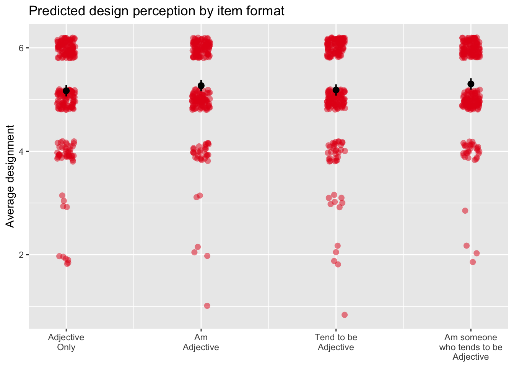

Does item format impact experience?
Last updated 2023-04-20
These analyses test whether item format affects participants’ subjective experiences of participating in personality surveys.
Enjoyment
First, we test whether participants enjoyed their experience as a function of format. The item participants rated was:
“Overall, I am enjoying responding to the present survey.”
mod_enjoy_1 = lm(enjoy_responding ~ format, data = enjoy_df)
car::Anova(mod_enjoy_1)## Anova Table (Type II tests)
##
## Response: enjoy_responding
## Sum Sq Df F value Pr(>F)
## format 5.28 3 1.6728 0.1712
## Residuals 1021.42 970Participants did not vary in their enjoyment of the survey as a function of item format. See @ref(fig:enjoyFormat).
plot_model(mod_enjoy_1, type = "pred", show.data = T, jitter = T)$format +
labs(x = NULL,
y = "Average enjoyment",
title = "Predicted enjoyment by item format")
We also test whether this is a function of device type and the interaction of devicetype with format.
mod_enjoy_2 = lm(enjoy_responding ~ devicetype, data = enjoy_df)
car::Anova(mod_enjoy_2)## Anova Table (Type II tests)
##
## Response: enjoy_responding
## Sum Sq Df F value Pr(>F)
## devicetype 2.91 2 1.3777 0.2527
## Residuals 1023.80 971Participants did not enjoy differently by format.
mod_enjoy_3 = lm(enjoy_responding ~ format*devicetype, data = enjoy_df)
car::Anova(mod_enjoy_3, type = "3")## Anova Table (Type III tests)
##
## Response: enjoy_responding
## Sum Sq Df F value Pr(>F)
## (Intercept) 1422.05 1 1350.6771 <2e-16 ***
## format 2.21 3 0.7006 0.5518
## devicetype 4.03 2 1.9136 0.1481
## format:devicetype 5.57 6 0.8822 0.5072
## Residuals 1012.84 962
## ---
## Signif. codes: 0 '***' 0.001 '**' 0.01 '*' 0.05 '.' 0.1 ' ' 1The relationship of item format to enjoyment did not vary as a function of device type.
Perception of survey design
Next, we test whether participants viewed the survey differently as a function of format. The item participants rated was:
“Overall, I think the present survey is well designed.”
mod_design_1 = lm(well_designed_study ~ format, data = enjoy_df)
car::Anova(mod_design_1)## Anova Table (Type II tests)
##
## Response: well_designed_study
## Sum Sq Df F value Pr(>F)
## format 2.97 3 1.2987 0.2736
## Residuals 740.05 970Participants did not vary in their perception of the survey as a function of item format. See @ref(fig:designFormat).
plot_model(mod_design_1, type = "pred", show.data = T, jitter = T)$format +
labs(x = NULL,
y = "Average designment",
title = "Predicted design perception by item format")
We also test whether this is a function of device type and the interaction of devicetype with format.
mod_design_2 = lm(well_designed_study ~ devicetype, data = enjoy_df)
car::Anova(mod_design_2)## Anova Table (Type II tests)
##
## Response: well_designed_study
## Sum Sq Df F value Pr(>F)
## devicetype 4.66 2 3.0666 0.04703 *
## Residuals 738.36 971
## ---
## Signif. codes: 0 '***' 0.001 '**' 0.01 '*' 0.05 '.' 0.1 ' ' 1Participants did perceive the design of the study differently by format. We explore this more here:
emmeans(mod_design_2, pairwise~"devicetype", adjust = "none")## $emmeans
## devicetype emmean SE df
## Mobile 5.36 0.0615 971
## Desktop or laptop computer 5.20 0.0322 971
## Tablet (for example, iPad, Galaxy Tablet, Amazon Fire, etc.) 5.08 0.1415 971
## lower.CL upper.CL
## 5.24 5.48
## 5.14 5.27
## 4.80 5.36
##
## Confidence level used: 0.95
##
## $contrasts
## contrast
## Mobile - Desktop or laptop computer
## Mobile - Tablet (for example, iPad, Galaxy Tablet, Amazon Fire, etc.)
## Desktop or laptop computer - Tablet (for example, iPad, Galaxy Tablet, Amazon Fire, etc.)
## estimate SE df t.ratio p.value
## 0.154 0.0694 971 2.221 0.0266
## 0.279 0.1543 971 1.810 0.0705
## 0.125 0.1451 971 0.863 0.3886emmeans(mod_design_2, pairwise~"devicetype", adjust = "holm")## $emmeans
## devicetype emmean SE df
## Mobile 5.36 0.0615 971
## Desktop or laptop computer 5.20 0.0322 971
## Tablet (for example, iPad, Galaxy Tablet, Amazon Fire, etc.) 5.08 0.1415 971
## lower.CL upper.CL
## 5.24 5.48
## 5.14 5.27
## 4.80 5.36
##
## Confidence level used: 0.95
##
## $contrasts
## contrast
## Mobile - Desktop or laptop computer
## Mobile - Tablet (for example, iPad, Galaxy Tablet, Amazon Fire, etc.)
## Desktop or laptop computer - Tablet (for example, iPad, Galaxy Tablet, Amazon Fire, etc.)
## estimate SE df t.ratio p.value
## 0.154 0.0694 971 2.221 0.0798
## 0.279 0.1543 971 1.810 0.1411
## 0.125 0.1451 971 0.863 0.3886
##
## P value adjustment: holm method for 3 testsParticipants perceive the design to be better on mobile devices than on desktop or laptop computers; however, after correcting for multiple comparisons, this effect is no longer significant.
mod_design_3 = lm(well_designed_study ~ format*devicetype, data = enjoy_df)
car::Anova(mod_design_3, type = "3")## Anova Table (Type III tests)
##
## Response: well_designed_study
## Sum Sq Df F value Pr(>F)
## (Intercept) 1479.86 1 1941.1083 <2e-16 ***
## format 0.67 3 0.2930 0.8305
## devicetype 0.86 2 0.5646 0.5688
## format:devicetype 1.88 6 0.4106 0.8723
## Residuals 733.41 962
## ---
## Signif. codes: 0 '***' 0.001 '**' 0.01 '*' 0.05 '.' 0.1 ' ' 1The relationship of item format to survey design enjoyment did not vary as a function of device type.